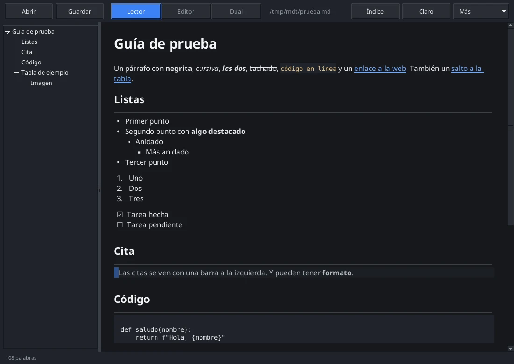
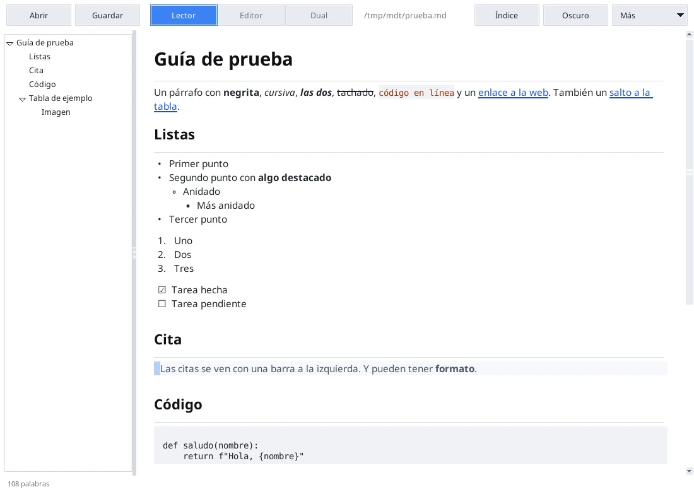
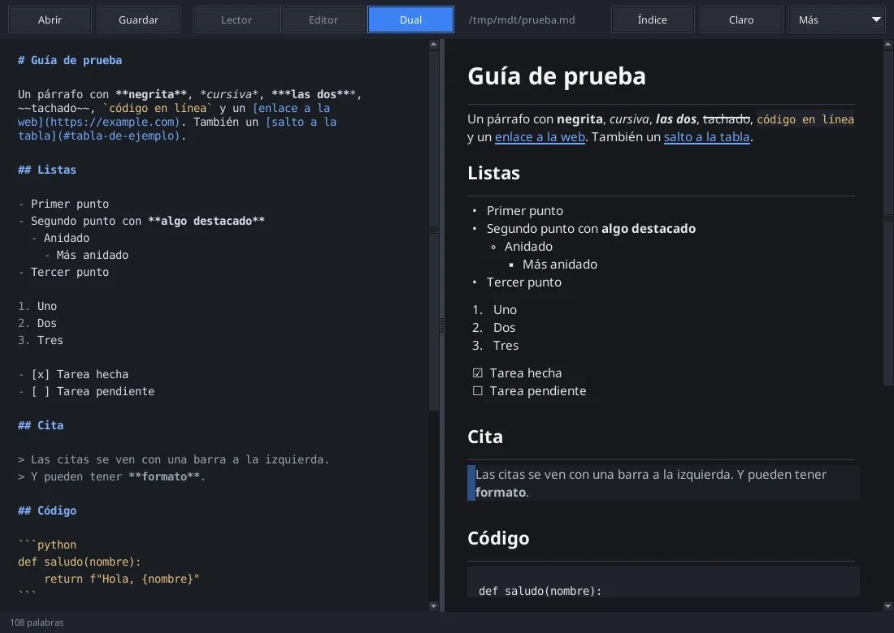
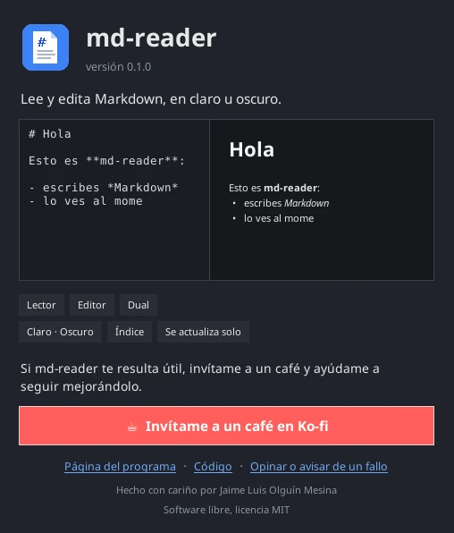

Markdown, bonito al leer y tal cual al editar.
md-reader enseña el Markdown con su formato de verdad y te deja editar el texto tal cual. Lector, editor o los dos a la vez, en modo claro u oscuro.
Esta demostración funciona de verdad: escribe en el panel izquierdo y el derecho cambia mientras escribes. El programa hace lo mismo, con tus propios archivos.
Léelo, edítalo y listo
Sin procesador de textos de por medio: el archivo sigue siendo Markdown normal, y lo ves con formato mientras trabajas en él.
- Formato de verdad
- Títulos, negrita, cursiva, tachado, listas anidadas, casillas de tareas, tablas, código, citas, líneas, enlaces e imágenes. Los enlaces a una sección (#…) o a otro .md se abren dentro del programa.
- Tres modos
- Lector, Editor (el texto Markdown tal cual, con un resaltado discreto) y Dual (los dos a la vez: lo que escribes se ve al momento). Ctrl+E cambia entre lector y editor en la misma ventana.
- Editar desde el lector
- Un clic en una casilla de tarea la marca (cambia [ ] ↔ [x] en el texto), y Ctrl+E abre el editor justo donde hiciste clic.
- Formatos a mano
- Selecciona un trozo y pulsa el botón derecho: negrita, cursiva, tachado, código, enlace, títulos, listas, casillas, cita o bloque de código, en el editor o en el lector. F1 abre una guía con cada formato, cómo se escribe y cómo se ve.
- Copiar a Word
- Ctrl+C en el lector copia con formato: pégalo en Word, Writer o un correo y se conservan los títulos, la negrita, las listas y las tablas. O Más ▸ «Copiar todo con formato» para el documento entero.
- Claro u oscuro
- Con un botón, o como lo tenga el sistema. El mismo aspecto sencillo que cam-ui.
- Índice y buscar
- Un índice lateral con los títulos del documento, buscar con Ctrl+F, zoom con Ctrl+= y Ctrl+-, y archivos recientes.
- Respeta tus archivos
- Guarda en el mismo formato en que los abrió: codificación, BOM y saltos de línea de Windows. Si el archivo cambia fuera del programa, se recarga solo; si tienes cambios sin guardar, avisa en vez de pisarlos.
- Se actualiza solo
- Mira si hay versión nueva al abrirse y pregunta antes (o no, si lo prefieres). Guarda una copia de la anterior para volver con un clic.
Lector, editor y dual



Instalar
Descarga el instalador
Un archivo pequeño, md-reader-instalar.cmd. Puedes leerlo antes de ejecutarlo.
Ábrelo
Si Windows avisa, elige «Más información» y «Ejecutar de todos modos». Prepara su propio Python (no necesitas tenerlo) y la primera vez tarda un minuto o dos.
Úsalo desde el menú Inicio
md-reader se abre al terminar y aparece en el «Abrir con» de los .md. Para abrirlos siempre con él: clic derecho en uno ▸ Abrir con ▸ Elegir otra aplicación ▸ md-reader ▸ «Usar siempre».
Descarga el instalador
El archivo md-reader-instalar-macos.zip, y descomprímelo (doble clic).
Ábrelo con clic derecho ▸ Abrir
La primera vez macOS pide confirmación porque no viene de la App Store. Se abre una ventana de terminal con el progreso.
Encuéntralo en Aplicaciones
Queda en la carpeta Aplicaciones de tu usuario (~/Applications), se abre al terminar y aparece en el «Abrir con» de los .md.
A mano
Con Python 3.10 o superior (en Linux, el del sistema con python3-tk):
pip install markdown-it-py pillow
python md_reader.py notas.md
Código y notas: GitHub
¿Qué instala y dónde?
Todo va a tus propias carpetas de usuario: en Windows, el programa en %LOCALAPPDATA%\Programs\md-reader y su Python propio en %LOCALAPPDATA%\md-reader, con acceso en el menú Inicio y en el escritorio, y aparece en «Aplicaciones instaladas»; en macOS, md-reader.app en ~/Applications. No toca el Python que ya tengas ni pide permisos de administrador.
¿Cómo lo quito?
En Windows, desde Configuración → Aplicaciones → Aplicaciones instaladas, «md-reader». En macOS, con el desinstalador que indica el instalador al terminar (bash "~/Library/Application Support/md-reader/uninstall.sh"). Tus archivos Markdown nunca se tocan.
¿Por qué Windows me avisa al abrir el archivo?
El instalador es un script sin firmar por una empresa, y Windows avisa con cualquier script descargado. Ábrelo con un editor de texto si quieres comprobarlo: solo descarga md-reader, su Python y sus dos librerías.
¿Y Linux?
Todavía no con instalador: el Python que traería en Linux dibuja el texto con fuentes antiguas sin suavizar y se vería mal. Desde el código, con el Python del sistema (paquete python3-tk), funciona bien.
¿Envía algo a alguna parte?
No. Solo se conecta a esta página para mirar si hay actualizaciones. Tus documentos se quedan en tu ordenador.
¿Se actualiza solo?
Sí. Mira si hay una versión más nueva al abrirse y pregunta antes de instalarla; también puedes mirarlo a mano en Más ▸ «Buscar actualizaciones», o marcar «actualizar automáticamente al abrir». Guarda una copia de la versión que tenías y puede volver a ella con un clic.
Cuéntame cómo te va
Vale la pena escribir aunque todo haya ido bien: me dice qué cuidar.
Dar mi opinión
Para qué lo usas, qué te ha gustado y qué te ha costado.
Algo no funciona
Un archivo se ve mal, algo no se guarda, el programa se cierra.
Pedir una función
Cuéntame qué intentas conseguir y veo cómo hacerlo posible.
Hace falta una cuenta gratuita de GitHub. También puedes leer lo que han enviado otras personas.
Apoya md-reader
md-reader es gratis y no tiene anuncios. Si te resulta útil, invítame a un café y ayúdame a seguir mejorándolo.

También está dentro del programa: Más ▸ «Acerca de md-reader», con una pequeña demostración del modo dual que se escribe sola. Hecho con cariño por Jaime Luis Olguín Mesina.